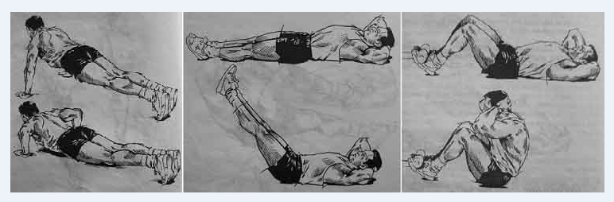

12 простых упражнений для всех возрастов.
Выполнима и дома, и на работе, и в школе
Упражнение 1.Круговые движения рукамиРазвивает мышцы плеч, спины и груди, улучшает осанку.
Встаньте прямо, поднимите прямые руки в стороны на уровень плеч, ладони смотрят вверх.
Медленно описывайте руками небольшие круги диаметром около 15 сантиметров. В основном движение исходит от плеч, напряжение
чувствуется в их задней части.
Выполните пять кругов вперёд и пять назад.
Упражнение 2. Наклоны с руками за головойРастягивает мышцы живота, укрепляет спину, улучшает осанку.
Встаньте прямо, заведите руки за голову.
С выдохом наклоните корпус вперёд до 45 градусов, шея на одной линии со спиной, взгляд направьте в пол перед собой.
Со вдохом выпрямитесь, поднимите голову.
Слегка прогнитесь назад, чтобы почувствовать растяжение мышц живота. Взгляд направлен в потолок.
Выпрямитесь. Голова остаётся поднятой.
Повторите 10 раз.
Упражнение 3. Подъём рукРазвивает силу плеч, укрепляет арку стопы.
Встаньте прямо, поднимите прямые руки в стороны на уровень плеч, ладони направлены вниз.
Со вдохом поднимитесь на носочки, руки поднимите вверх на 45 градусов.
С выдохом встаньте на стопу целиком, опустите руки до параллели с полом.
Повторите 10 раз.
Упражнение 4. Глубокий наклон в сторонуРазвивает мышцы плеч и талии, стимулирует печень и кишечник.
Встаньте прямо, поднимите руки в стороны на уровень плеч ладонями вниз — это исходное положение.
Левую руку поднимите вверх, правую опустите вниз вдоль тела.
Начинайте наклон вправо от бёдер, правая рука ползёт по ноге к колену, левая закручивается вокруг головы. В крайней точке левая ладонь лежит на правом ухе или около него.
Медленно выпрямляйтесь, разворачивая руки в исходное положение.
Совершите аналогичный наклон в другую сторону.
Повторите 10 раз
Упражнение 5. СкручиваниеПоднимает и расширяет грудную клетку. Растягивает мышцы живота.
Встаньте прямо, со вдохом согните руки в локтях, кулаки поставьте под мышки.
Продолжая вдох, отведите плечи назад, чуть прогнитесь в грудном отделе, расширяя грудную клетку, поднимите голову вверх и направьте взгляд в потолок.
С выдохом переведите руки вперёд, затем разведите в стороны.
На задержке дыхания наклонитесь вперёд до параллели с полом, руки отведите назад.
Выпрямитесь и переведите руки вперёд, а затем разведите их в стороны.
Повторите 10 раз.
Упражнение 6. Приседание на носочкахУкрепляет арку стопы, мышцы голени и спины.
Встаньте прямо, ноги на ширине плеч, руки поднимите в стороны на уровень плеч, разверните вниз ладонями.
Со вдохом поднимитесь на носочки.
Продолжая вдох, опуститесь в приседание.
На выдохе поднимитесь из приседания.
Продолжая выдох, опуститесь на полную стопу.
Повторите пять раз.
Упражнение 7. Вращение плечамиУпражнениеУкрепляет мышцы плеч.
Встаньте прямо, со вдохом поднимите плечи.
Продолжая вдох, подайте плечи вперёд.
С выдохом опустите плечи.
Продолжая выдох, отведите плечи назад.
Повторите десять раз.
Упражнение 8. Разворот рукРазвивает мышцы плеч и груди.
Встаньте прямо, руки скрестите впереди ладонями к себе.
Поднимайте руки по кругу накрест (правая ладонь очерчивает круг с левой стороны, левая — с правой), наверху разверните ладони наружу.
Опустите руки по кругу, не перекрещивая их (правая ладонь чертит круг справа, а левая — слева).
Повторите пять раз.
Опустите руки, не скрещивайте их. Ладони находятся рядом с бёдрами.
По кругу поднимите руки вверх, разворачивая ладонями наружу.
Опустите руки накрест, разворачивая ладони к себе.
Повторите пять раз.
Упражнение 9. Наклоны головыУкрепляет мышцы шеи, улучшает контроль над ними.
Встаньте прямо, наклоните голову вперёд.
Наклоните голову влево.
Откиньте голову назад.
Наклоните голову вправо.
Повторите пять раз.
Упражнение 10. «Мельница»Развивает гибкость мышц спины.
Встаньте прямо, ноги на ширине плеч, прямые руки поднимите в стороны на уровень плеч.
Наклонитесь, разворачивая корпус влево и сгибая правое колено. Правая рука касается пола между ногами, левая вытянута наверх.
Голова повёрнута к потолку, взгляд направлен на левую руку.
Вернитесь в исходное положение и повторите в другую сторону.
Выполните пять раз в каждую сторону.
Это несложная тренировка, которая должна проводиться легко и с удовольствием. Она развивает гибкость, улучшает осанку, мышечную координацию и чувство равновесия.
Укрепляет мышцы спины, раскрывает грудь и растягивает мышцы живота.
Встаньте прямо, руки поднимите над головой и сплетите пальцы в замок, повернув ладони к голове. Чем ближе руки к голове, тем эффективнее упражнение.
Мягко наклонитесь вперёд. Движение контролируемое, без рывков и экстремальных наклонов.
Наклонитесь вправо.
Наклонитесь назад.
Наклонитесь влево.
Сделайте по пять наклонов в каждом направлении.
Упражнение 12. «Крылья»Укрепляет мышцы спины и плеч, развивает диафрагму.
Встаньте прямо, ноги вместе, носки чуть развёрнуты наружу, руки свободно свисают вдоль тела.
На вдохе поднимите прямые руки перед собой.
Продолжая вдох, раздвиньте руки в стороны.
Заканчивая вдох, поднимите руки над головой, ладони смотрят вперёд.
На выдохе сделайте наклон, руки заведите за спину и поднимите. Голова поднята, взгляд направлен вперёд.
Вернитесь в исходное положение и повторите упражнение ещё девять раз.
Это несложная тренировка, которая должна проводиться легко и с удовольствием. Она развивает гибкость, улучшает осанку, мышечную координацию и чувство равновесия.
Силовые упражнения
Нет ничего проще, чем ежедневно проделывать комплекс упражнений на свой выбор.
Пример простой ежедневной тренировки
- Отжимания - 15 раз
- Пресс - 15 раз
- Приседания - 15 раз
- Икры - 15 раз на каждой ногой
- Подтягивания (если есть турник) - 5 раз
Примечания по технике выполнению
1. Пресс - каждый раз можно делать разные упражнения, видов упражнений на пресс великое множество. Основные - скручивание (лежа на спине, колени согнуты, пятки на полу, руки за головой сложены в замок, подтянуться корпусом до касания коленей лбом), и подъем ног (лежа на спине, ноги прямые, руки в замке за головой, поднять прямые ноги вверх на угол 45 градусов по отношению к полу).
2. Приседания - ноги на ширине плеч, спина прямая, приседаем до момента, пока бедра не станут параллельны полу. Техника по сути такая же, как в приседаниях тяжелоатлетов.
3. Икры - подъем на носок одной ноги, другая нога в воздухе. Для усиления эффекта лучше вставать подушечкой носка на толстую книгу (5см) - это увеличит амплитуду движения.
4. Паузы между упражнениями в цикле можете не делать, если не чувствуете на то причины. Между циклами можете сделать небольшую паузу.
5. Если делаете комплекс сразу после пробуждения утром, сделайте вначале легкую разминку - махи руками, вращения, наклоны корпусом...
Сначала, возможно, вы сможете проделать комлпекс не 4 раза, а 2 или 3, и не по 15 упражнений, а по 10 - все зависит от тренированности вашего тела. Но! Если делать его ежедневно, а не через день, прогресс пойдет с первой же недели. Для наглядности можете вести дневник.
Поначалу мышцы будут болеть - но эта боль обманчива - это будут не микроразрывы мышц, а молочная кислота. Поэтому не проявляйте слабость - делайте упражнения ежедневно, невзирая на ломоту - это не те упражнения, после которых надо давать отдых в два дня. Это не жим лежа со штангой, чтобы заострять свое внимание на суперкомпенсации - для ее наступления вполне хватит 24 часов (при условии достаточного сна).
Для любого человека это вполне по силам делать ежедневно. Если чувствуете, что совсем плохо - делайте меньше, уменьшите количество циклов комплекса, но приучите себя к этой зарядке ежедневно, выработайте привычку. Если чувствуете, что способны увеличить количество повторений упражнения - немедленно увеличивайте! Успевайте за своим прогрессом, не делайте 30 отжиманий, если уже способны делать 40. Не жалейте себя, если чувствуете, что у вас полно сил и энергии.
Главная суть этого метода в постоянстве. Ежедневное выполнение упражнений творит чудеса. Какой бы слабый ни был ваш организм, через месяц ежедневных упражнений вы достигните результатов, которые будут удивительны. Самый большой прогресс всегда у новичков.
Упражнения на ноги очень важны,так как сильные ноги - это основа организма.Кроме того, это даст вам возможность подготовить ноги для беговых тренировок. К примеру, пробежать 100м и уложиться в норматив вы сможете, даже не тренируя сам бег на 100м - достаточно будет ежедневных приседаний и упражнений на икры, которые наполнят силой ваши ноги.
Для тех, кто тренируется со штангой.
Будь вы увлечены пауэрлифтингом или бодибилдингом - не бойтесь, что этот комплекс как-то ослабит ваши мышцы перед тренировками со штангой. Наоборот - это прекрасное дополнение к вашим упражнениям, гармонично развивающее все тело. Если сравнивать упражнения комплекса и упражнения со штангой для накачки массы (обычно это 6-12 повторений у билдеров), мышечные группы в этих случаях напрягаются по-разному. Проверено - даже выполнение 6 циклов отжиманий до отказа, не понижало результаты в жиме лежа, который проводился в тот же день. А в долгосрочной перспективе - улучшает показатели жима.
Теперь перейдем к бегу
100м - дистанция спринтерская, здесь важна "взрывная" сила. Работают в основном быстросокращающиеся анаэробные мышечные волокна, кислород практически не используется организмом. Это так называемые "белые" мышцы. Тренировка проста - 100м легко тренировать на стадионах, да и просто во время тренировочных пробежек как резкое "взрывное" ускорение.
Внимание! Обязательно делайте разминку и растяжку, или просто пробежитесь перед тренировкой - спринтерские рывки при холодных неэластичных мышцах опасны растяжениями. Не зря в нормативах 100м стоит после дистанции в 3000м.
Альтернативная тренировка 100м состоит, как уже упоминалось, в ежедневном выполнении приседаний и упражнений на икры.
3000м - дистанция стайерская, здесь работают другие мышечные волокна - медленно сокращающиеся окислительные, активно потребляется кислород. Это так называемые "красные" мышцы. Тренировка состоит из непосредственных длительных пробежек. Бегать можно на стадионах, лесопарковых зонах и т.п.
3000м - это основная проверка на выносливость. Иметь хорошую выносливость означает иметь большую сопротивляемость к болезням, токсичным веществам, устойчивость к температурным перепадам и т.п..
Зима - не помеха для бега, если, конечно, температура не опустится ниже -20 градусов. В таком случае остается либо спортзал, в котором есть беговая дорожка, либо легкоатлетический манеж - крытый стадион.
Для прогресса на этой дистанции, как и на 100м, положительно скажется ежедневная тренировка в виде приседаний и упражнений на икры. Однако основная тренировка - сам длительный бег.
Далее поговорим о ГТО.
I.Что такое ГТО и зачем это нужно?
Всероссийский физкультурно-спортивный комплекс «Готов к труду и обороне» (ГТО) — это нормативная основа физического воспитания населения страны, нацеленная на развитие массового спорта.
Предложение ввести всесоюзные испытания «Готов к труду и обороне» поступило в 1930 году, а ещё через год был сформирован первый комплекс ГТО, включавший 21 норматив.
Возродили комплекс «Готов к труду и обороне» в 2014 году. Был утвержден новый перечень испытаний, разработаны нормативы, а также дизайн знаков отличия. Их три: золотой, бронзовый, серебряный.
II.Кто может выполнить нормативы?
Выполнить нормативы могут жители столицы в возрасте от 6 лет и старше, систематически занимающиеся спортом, в том числе самостоятельно, и имеющие медицинский допуск. Комплекс ГТО включает в себя 11 возрастных групп.
Нормативы и количество испытаний меняются в зависимости от пола и возраста жителей. Например, проверить туристические навыки и сдать стрельбу можно с 11 до 59 лет, а пройти испытания по самообороне без оружия только с 13 до 29 лет. Вместе с тем некоторые дисциплины обязательны для всех: это наклон вперёд и бег (смешанное передвижение). Узнать, какие нормативы можно сдать в вашем возрасте и какие результаты удостаиваются знака ГТО, можно на сайте проекта.
III.Где можно выполнить нормативы?
Сегодня в столице действует 21 центр тестирования комплекса ГТО. Они работают на базе учреждений Москомспорта, Департамента образования и науки города Москвы, иных организаций.
Места для тестирования есть во всех городских округах. Выбрать подходящее можно на сайте Москомспорта.
Нормативы можно выполнить и на временных площадках в рамках городских фестивалей и праздников.
IV.Как получить медицинское заключение для участия?
Лица, которым по результатам диспансеризации или профилактического медицинского осмотра установлена IV группа здоровья, несовершеннолетние со специальной медицинской группой здоровья для занятий физической культурой к выполнению нормативовкомплекса ГТО не допускаются.
Желающие выполнить нормативы комплекса ГТО, и имеющие основную медицинскую группу для занятий физической культурой должны оформить соответствующее медицинское заключение с указанием группы здоровья у врача-терапевта или педиатра (по возрасту).
Лица, которым по результатам диспансеризации или профилактического медицинского осмотра установлена IV группа здоровья, несовершеннолетние со специальной медицинской группой здоровья для занятий физической культурой к выполнению нормативовкомплекса ГТО не допускаются.
Лица, которым по результатам диспансеризации или профилактического медицинского осмотра установлена III группа здоровья или подготовительная медицинская группа для занятий физической культурой, для решения вопроса о допуске к выполнению нормативов комплекса ГТО должны пройти дополнительные обследования.
Лица, которым по результатам диспансеризации или профилактического медицинского осмотра установлена IV группа здоровья, несовершеннолетние со специальной медицинской группой здоровья для занятий физической культурой к выполнению нормативовкомплекса ГТО не допускаются.
V.Как зарегистрироваться для участия?
Чтобы выполнить нормативы ГТО, нужно зарегистрироваться на сайте. Каждому участнику присваивается личный уникальный идентификационный номер. Заявку на выполнение испытаний можно подать в электронном виде или непосредственно в центре тестирования. Для допуска к испытаниям необходимо предоставить документ, удостоверяющий личность, и медицинский допуск от врача.
После успешного выполнения необходимого количества испытаний соответствующей ступени (определяется в зависимости от возрастной категории) сводный протокол направляется в автоматизированную информационную систему ГТО, где происходит его обработка и выгрузка соответствующим образом.
VI.Зачем это нужно?
Введение комплекса «Готов к труду и обороне» способствует улучшению физической подготовки жителей и в целом развитию массового спорта.
Абитуриенты, имеющие золотой знак ГТО, могут получить дополнительные баллы к ЕГЭ при поступлении в вуз. А студенты с такими знаками могут претендовать на повышенную академическую стипендию. Окончательное решение принимает администрация учебного заведения.